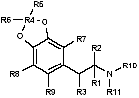
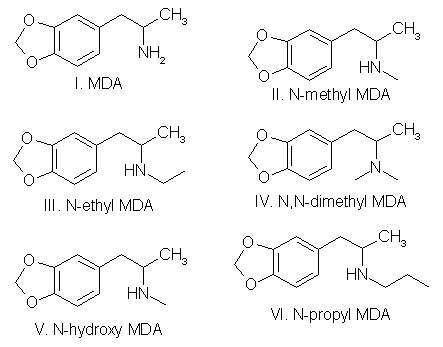
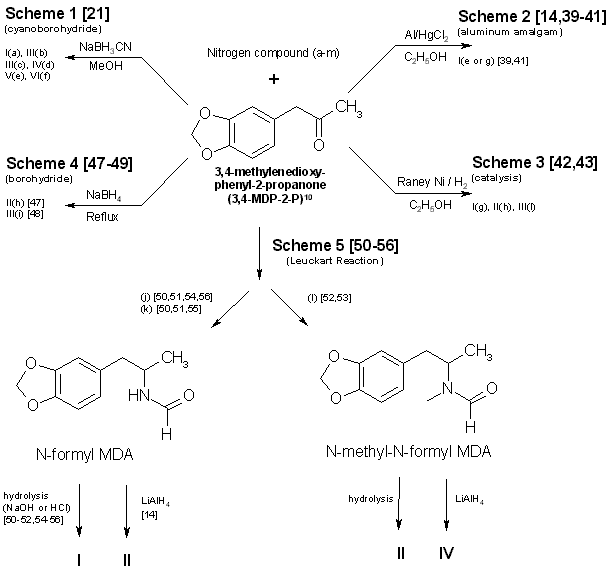
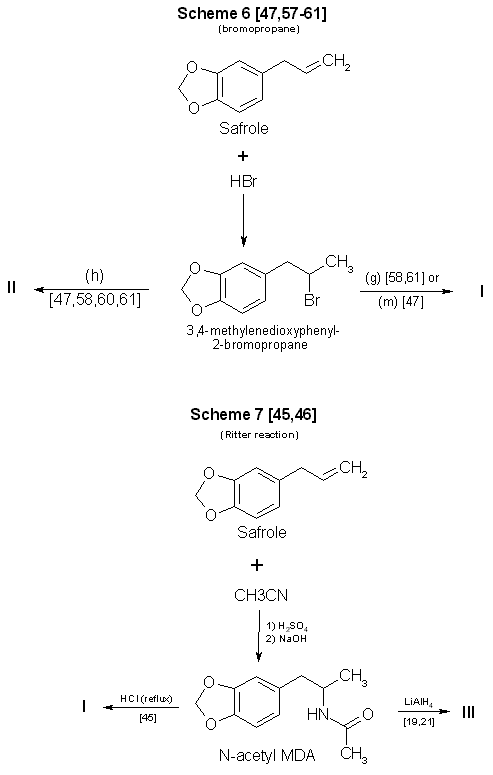
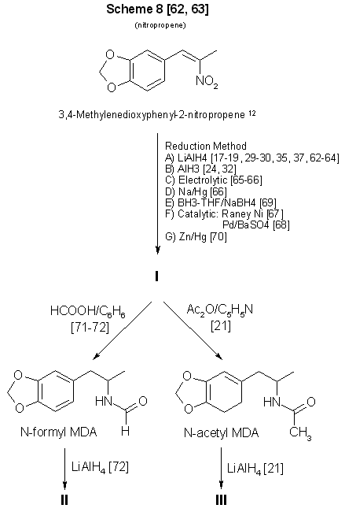
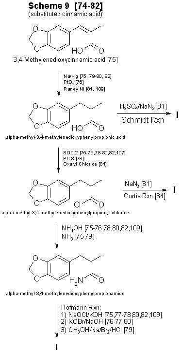
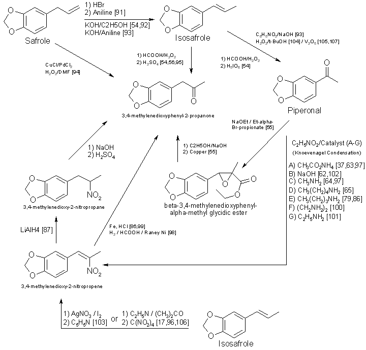

Abstract
Encountering a novel controlled-substance analog (designer drug) has become a distinct possibility for all forensic drug
laboratories. 3,4-Methylenedioxyamphetamine (MDA) in particular is a receptive parent compound for the molecular modifications which
produce such homologs and analogs. The identification of these compounds, however, can prove to be an arduous task. It would be desirable
to direct the focus of the identification to those compounds which are the more likely candidates for clandestine-laboratory synthesis. The
process of narrowing the range of theoretical possibilities to logical choices may be enhanced by using a suitable predictive scheme. Such
a predictive scheme for MDA analogs is presented based on putative Central Nervous System activity, existence or formulation of a reasonable
synthesis method, and availability of the required precursors.
To circumvent statutes enacted to control the use of various dangerous drugs (controlled substances), clandestine laboratory
operators will sometimes make minor alterations in the molecular structure of a parent compound. These structural changes are reflected in
the chemical nomenclature of the new analog or homolog, and, in the past, had effectively removed it from the purview of the law. Such
modifications, at least in the case of 3,4methylenedioxyamphetamine (MDA), do not appear to be haphazard. They are made by design and are
frequently based on information published in legitimate chemical and medical journals. A number of MDA analogs and homologs have been
reported, and a much larger number are theoretically possible. To aid the identification of new MDA derivatives, it would be useful if the
forensic chemist had a predictive scheme. This scheme could be used to target the most likely candidates at the commencement of the
analysis or to supplement analytical data as it was acquired.
Intuitively, there are three questions which should govern the appearance of new substituted MDA compounds: (1) Will the
synthesized MDA derivative have central nervous system (CNS) activity? (2) is there a suitable method of synthesis? (3) Are the required
precursors available? Obviously, compounds without some physiological effect will not intentionally be produced (however, see ref 41, pp
71 and 74, and ref 61, p 393 for unintentionally produced analogs). Syntheses which must be newly designed, or for which the published
prototypes require a large number of steps, necessitate a high degree of skill, use specialized equipment, or result in low yields, will
be poor candidates for clandestine manufacture of MDA analogs. Finally, if the precursor chemicals required are not commercially available
(or are economically impractical) and must themselves be synthesized by the clandestine laboratory operator, then the manufacture of the
corresponding analog is not likely. Each of these areas is important and will be dealt with separately.

CNS Activity
Of the three areas to be considered, CNS activity is certainly the most difficult to evaluate. The estimations of potential CNS activity
presented here are based on a variety of substituted phenethylamines and are not limited to MDA and its immediate derivatives. In addition,
the CNS studies cited employed both human subjects and a variety of laboratory animals for determination of activity. Although human
studies provide obvious advantages, man1,2 and animals1-4 each present problems in testing and evaluation of drug-induced activity.
For example, the choice of animal species can affect the observed response to a given drug2,5 and lead to results which appear
contradictory. Similarly, extrapolation from animal studies to man may not produce an absolute correlation in either degree or type of CNS activity.
Terminology1, consensus as to what constitutes a particular category of action1,3, and dosage-dependent responses1-5 may
each pose problems in the evaluation process. For the forensic chemist primarily concerned with compound identification, the distinction
between terms used to define the drug-induced activity may be of small consequence. However, without some demonstrable and desirable
pharmacological effect, new analogs will be of no value to those who illegally use controlled substances. To determine which drugs may
elicit a particular CNS response, the clandestine chemist has at his or her disposal the same primary source of information as the forensic
chemist: animal or clinical reports from legitimate scientific and medical journals. A review of this literature will permit reasonable
evaluations of which compounds may be likely candidates for clandestine synthesis.
The CNS activity initiated by substituted phenylisopropylamines covers a spectrum of physiological actions from the purely
stimulant activity found in amphetamine to the purely hallucinogenic activity of 2,5-dimethoxy-4-methylamphetamine (DOM)1,6-11. Small
changes in the structure of a molecule, such as addition or change of location of a substituent, can markedly alter, or abolish, the CNS
action of the parent compound. The correlation between a particular aspect of molecular structure and the physiological activity of the
compound has been widely studied in an effort to synthesize improved pharmaceuticals10,11. These structure-activity relationship (SAR)
studies attempt to mimic some desirable physiological response to one compound by manipulating the molecular fragment believed responsible
for that action onto, or within, a parent molecule. Experimentally, these molecular modifications must be evaluated one at a time since the
observed effects may differ in qualitative or quantitative aspects from the anticipated results and are not necessarily additive. Although
SARs have proven quite useful, it should be kept in mind that they are not infallible. Several examples follow which illustrate some of the
anomalies which have been encountered using SARs.
The compound 3,4-MDA has been established as having both stimulant and hallucinogenic properties7-9,12,13 (MDA possesses a
chiral center, and can exist as (R), (S), and (R,S) configuration. The S(+) enantiomer appears responsible for the stimulant effects of
racemic (R,S)-MDA, whereas hallucinogenic activity is attributed to the R(-) enantiomer7,13). In "drug discrimination"3,4 studies
using rats, relocation of the methylenedioxy bridge to give 2,3-MDA, produced an isomer which is reportedly only one-fifth as active as
3,4-MDA9. This isomer elicited a response in the animals indicating that they recognized the compound as 3,4-MDA. Remarkably. however,
rats trained to identify either stimulant or hallucinogenic effects could distinguish neither in 2,3-MDA8,9. N-Methylation of MDA, to
give N-methyl MDA, de creases the duration of action of the analog14 and appears to minimize or abolish the hallucinogenic aspect6,12-15. N-Ethylation of MDA produces an analog which exhibits neither stimulant nor hallucinogenic effects in contrast. N-ethylation of
amphetamine slightly reduces potency while retaining the stimulant effect of the parent compound.
Homologation of N-methyl MDA, to a butyl side chain, instills new CNS properties termed "entactogen"14,16 and provides a
compound devoid of hallucinogenic activity with little or no stimulant effect remaining14. 3,4-Methylenedioxyphenethylamine (MDPEA), the
alpha-demethylation derivative of MDA. is without central effect in man1,13 at 200 mg. These examples provide a prelude to the following
discussion and illustrate the difficulty in predicting the effect that small structural changes will have on human CNS activity. With this
in mind, the following SAR review should serve as a guide for assessing the potential, or lack of potential, for some form of CNS activity.
Ideally, the assessments made by the forensic chemist, even if incorrect, will parallel those of the clandestine chemist.
Table 1 presents many of the possible substitution patterns for MDA. Throughout this discussion 3,4-MDA will be considered the
parent, or reference, compound (R1 = CH3, R4 = CH2, R2, R3, R5 to R11 = H), upon which the indicated modification is effected. When
nonbridged phenylisopropylamines such as ephedrine, DOM, phentermine, or cathinone are being described, it should be recognized that the 3
and 4 ring positions in Table 1 are occupied by hydrogen or, as appropriate, the substituents shown for R7, R8, and R9.
TABLE 1
Substitution patterns for clandestinely produced
MDA analogs or homologs or both

Where:
- R1, R2 = H, CH3, C2H5 and R1 and R2 may be the same or different
- R3 = H, OH, CH3, Cl, Br, O=
- R4 = C, C2H2, C3H4, if R5 = R6 = H
- R5, R6 = H, CH3, C2H5, C3H7 when R4 = CR5R6 and R5 = H or R5 = R6
- R7, R8, R9 = H, CH3, C2H5, C3H7, OCH3, OC2H5, Br, SCH3, and when R7, R8 and R9 are the same or different
- R10 = H, OH
- R11 = H, CH3, C2H5, i-C3H7, n-C3H7 or R10 = R11 = CH3
Length (R1) and Branching (R2) of Side Chain
The three-carbon side chain (R1 = CH3) provides the most active compounds17-21. Decreasing the side chain by one carbon (R1 = H)
produces phenethyl derivatives which exhibit reduced stimulant or hallucinogenic activity or both1,2,8,13. increasing the side chain of
the hallucinogenic amphetamines by one carbon (R1 = C2H5) to give butane analogs causes abolition of hallucinogenic activity14,22.
However, the N-methylated butane derivative of MDA is reported to have novel CNS effects14,16 with neither stimulant nor hallucinogenic
properties. In amphetamine, (R1 = CH3; R2 = H) branching produces phentermine (R1 = R2 = CH3) and a resultant decrease in stimulant
activity10,11. With the ethyl homolog (R1 = CH3; R2 = C2H5), CNS stimulation11 is absent. An indirect assessment23 of the
corresponding methylenedioxy phentermine analog (R1 = R2 = CH3) indicates that the above trend of decreased stimulant activity with
increased branching may also hold for this compound.
Beta Substitution (R3)
By analogy with the amphetamine/phenylpropanolamine10,11,24 and methamphetamine/ephedrine pairs, hydroxy substitution (R3 = OH) of MDA
could lead to a decrease in CNS stimulant activity. Oxidation of the hydroxy group of phenylpropanolamine or ephedrine produces the
aminoketones (R3 = O ) cathinone and methcathinone, respectively. Examination of cathinone in rats4,8 and methcathinone in mice6,11 indicate a stimulant effect similar to that of their nonoxygenated counterparts. Potentially, beta keto MDA and beta keto MDMA could retain
stimulant activity similar to the unbridged parent compounds.
Substitution of a methoxy group at the beta position [R3 = OCH3] on MDPEA has been reported to give an hallucinogenic homolog of equal
potency with MDA24. in view of this, a clandestine laboratory chemist may assume that beta methoxy substitution on MDA would also yield
an hallucinogenic analog and target this compound for synthesis. The beta chloro and bromo derivatives of amphetamine have been prepared as
synthetic intermediates but apparently have not been evaluated for CNS activity. Masking or decreasing the polarity of the atom or group
attached to the beta carbon can lead to increased CNS stimulation24. It may be anticipated that beta halo derivatives would have some
CNS activity.
Alteration of the Alkyldioxy Bridge (R4, R5, R6)
The alkyldioxy bridge may occupy either of two isomeric positions on the phenyl ring: 3,4 or 2,3. When substitutents are added to the
ring, the 3,4 position is equivalent to the position and the 2,3 position is identical to the 5,6 position. The appropriate choice of
numbers will be determined by the location of substituents R7, R8, and R9. Both isomers and their various methoxy derivatives (R7, R8,
and R9, see the following)1,2,11,25 appear to stimulate hallucinogenic/psychotomimetic activity to some degree. Insertion of methylene
groups into the methylenedioxy bridge (R4), to give an ethylenedioxy (-O-CH2CH2-O-) or trimethylenedioxy (-O-CH2CH2CH2-O-) compound, leads
to a decrease in CNS effectiveness17,18. 3-Methoxy-4,5-ethylenedioxyamphetamine is reported to have one third the hallucinogenic
activity of MDA2. Addition of one methyl group (R5 = CH3, R6 = H) to the methylenedioxy bridge diminishes activity, while two methyl
groups (R5 = R6 = CH3) inactivates the parent molecule26.
Ring Substitution (R7, R8, R9)
Addition of one methoxy group (R7 = OCH3, R8 = R9 = H) in either ortho ring position (2-methoxy or 6-methoxy) greatly increases the
hallucinogenic activity of MDA1,2,11,27,28. Meta substitution (5-methoxy) produces a less potent isomer1,2,11,27,28 having CNS
effects which could not be accurately defined as either psychotomimetic or hallucinogenic25. Putting a methoxy group at the 2 position
of the homolog MDPEA yields a "mood elevator"1 of greater activity than 3,4-MDA; a methoxy group at the 5 position decreases the
psychotomimetic activity induced by this substituent1,2. Dimethoxylation of 3,4-MDA can produce either 2,5-dimethoxy-3,4-MDA or
2,3-dimethoxy-4,5-MDA, each of which has greater hallucinogenic1 activity than the parent compound1,2,11. Bromination of 3,4-MDA at
the 6 position (that is, 2-Br-4,5 MDA) results in a less active hallucinogen with an amphetamine-like stimulant activity29.
Table 1 presents several substituents that are possible candidates for ring addition19,29-36. Exploration of these substituents
has primarily been undertaken using 2,5-dimethoxyamphetamine (2,5-DMA) as the parent compound with substitution frequently occurring at
the 4 (para) position. This position yields particularly active hallucinogenic analogs33-36. Substitutents that are more resistant to
metabolic oxidation will generally produce greater potency34,36. The para position is already occupied by part of the methylenedioxy
bridge in 3,4-MDA prohibiting substitution and making a comparison by analogy impossible. The compound 4-methoxy-2,3-MDA1,2 is the
single 4-substituted methylenedioxy compound which has been evaluated. It exhibits activity and potency approximately equal to 3,4-MDA1,2 and is five times as potent as 2,3-MDA9. Attachment of other groups listed in Table 1 may also produce some compounds with CNS
activity. In general, substitution with ethoxy30 or thiomethyl31,32 groups at ortho or meta positions in substituted
phenylisopropylamines resulted in less active compounds. In para (this is, 4) substituted 2,5-dimethoxyamphetamines, moving the methyl,
methoxy, or bromo substituent to the meta (that is, 3) position yielded less active analogs18.
N-Substitution (R10, R11)
Introduction of a methyl (R10 = CH3, R11 = H) or an ethyl (R10 = CH3, R11 = H) group to the nitrogen atom provides CNS active compounds20,21,37. in general, N-methylation of phenylisopropylamines, which are hallucinogenic (for example, DOM), decreases their potency;
however, it has little effect on compounds which have stimulant activity (for example, amphetamine)6,8,12. The N-propyl and N-isopropyl
analogs have not shown CNS activity in humans at dosages of 160 mg21. The tertiary amine analog, N,N-dimethyl MDA, has also proved
ineffective at the 160-mg level21 but may produce CNS effects at 0.5- to 1-g doses38. The N-hydroxy analog (R10 = OH, R11 = H)
possesses CNS activity comparable to MDA20. The N-alkyl-N-hydroxy MDA derivatives apparently have not been evaluated or synthesized.
Two phenethylamine derivatives, N-methyl- and N,N-dimethyl-3,4-MDPEA, give no indication of CNS response at low dosages11.
Examination of these factors raises an expectation that future MDA analogs will have a 3 carbon straight chain and that the oxygen
atoms at the 3,4 (that is, 4,5) positions of the phenyl ring will be bridged by an unsubstituted methylene group. Monomethoxy substitution
at the 2 and 6 position and dimethoxy substitution at the 2,5 or 5,6 positions of 3,4-MDA will be obvious choices for experimentation by
clandestine chemists. Replacement of an amino hydrogen with small alkyl groups or addition of oxygen to give N-hydroxy-MDA will yield
analogs with proven CNS activity. A number of these N-substituted analogs have been reported by forensic science drug laboratories. Placing
a methoxy group or keto oxygen on the beta carbon atom has the potential to provide compounds approximately equal to MDA in quantitative
and qualitative effect. Less effective CNS active products may result with the above substituent combinations on 3,4-MDPEA, but other
variables being equal, these lower-potency drugs would not be the products of first choice for the clandestine chemist.
Synthesis
The second important area is selection of the synthetic method (Figs. 1-4 and Table 2). in general, the single-step techniques, which
require little knowledge of chemistry (Schemes 1-4, Fig. 1), are the ones most likely to be used in clandestine laboratories. An
experienced, innovative chemist may be able to devise novel syntheses or employ more difficult synthetic route. However, the ready
availability of established techniques should ensure their continued dominance in clandestine laboratory applications. In particular, the
wide variety of reactions successfully used to synthesize amphetamine and its analogs, homologs, and derivatives provides a fertile area
for investigation by the clandestine chemist.
Table 2
Products (I-VI) and nitrogen sources (a-m) for Fig 1-4

- Ammonium acetate
- Methylamine HCl
- Ethylamine HCl
- Dimethylamine HCl
- Hydroxylamine HCl
- n/i-Propylamine HCl
- Ammonium hydroxide
- Methylamine solution
- Ethylamine solution
- Formic acid/formamide
- Ammonium formate
- Formic acid and
N-Methylformamide
- Ammonia
Figure 1
Reactions Using 3,4-MDP-2-P as a precursor in synthesis of MDA and some analogs

Figure 2
Reactions Using safrole as a precursor in synthesis of MDA and some analogs

A number of the references provided herein describe the synthesis of various phenylisopropylamines other than MDA. These additional
references will enable forensic scb ence chemists to examine the types of reactions, and the range of parameters, available for use and
modification by the clandestine chemist. Appropriate substitutions of reactants in many of these syntheses can permit a variety of MDA
analogs and homologs to also be prepared. However, the choice of substitutions in a particular reaction is not always unrestricted. For
example, the aluminum amalgam reduction (Scheme 2, Fig. 1)14,39-41 initially described the production of methamphetamine. Substituting
ammonium hydroxide and 3,4-methylenedioxyphenyl- 2-propanone (MDP-2-P)41 for aqueous methylamine and phenyl-2-propanone (P-2-P), will
yield the expected product, MDA. If hydroxylamine hydrochloride is used as the amine source in an attempt to make N-hydroxy MDA, only
unsubstituted MDA is recovered. Braun, et al. (Scheme 1, Fig. 1)21 successfully used N,N-dimethylamine hydrochloride (HCl) to synthesize
N,N-dimethyl MDA. Yet simple substitution of N,N-diethylamine HCl or N-methyl-N-ethyl-amine HCl in the same reaction fails to provide the
diethyl21 or the methyl ethyl analogs. Attempts (Raney Ni (W-2), 95% EtOH, MDP2P, sec amine and H2 (55 psi) reacted in a Parr hydrogenating
apparatus at room temp) at this laboratory to use catalytic means42,43 to produce the above analogs through use of the secondary amines
as free bases (Scheme 3, Fig. 1) were also unsuccessful.
Figure 3
From 3,4-methylenedioxyphenyl-2-nitropropene to MDA and some analogs

12 See ref 86-87 for methods of preparing MDP2P oxime from this compound.
Several modifications of Schemes 1-8 (Figs. 1-3) have already been encountered in clandestine laboratories synthesizing a variety
of phenylisopropylamines. An example of a potential synthesis modification44 to produce MDA in the clandestine laboratory can be
formulated from the Ritter reaction (Scheme 7, Fig. 2), which originally detailed the manufacture of amphetamine from allylbenzene45.
Substitution of 3,4-methylenedioxyphenyl- 2-propanol and hydrogen cyanide44 for the listed reactants in Scheme 746 could result in
successful synthesis of MDA. In this instance, the concomitant risks from using hydrogen cyanide must be fully recognized.
Of the synthesis techniques presented, Scheme 1 (Fig. 1)21 is probably the most attractive. It requires no knowledge of
chemistry, has a wide applicability, offers little chance of failure, produces good yields, does not require expensive chemical apparatus
or glassware, and uses currently available (and easily synthesized) precursors. Scheme 2 (Fig. 1)14,39-41 has most of the desirable
features of Scheme 1, but may not be as versatile in terms of the amines which can be employed. Scheme 3 (Fig. 1)42,43, catalytic
hydrogenation (Raney Nickel), is frequently successful at atmospheric pressure but is most effective under increased pressure. This
requires purchase or construction of a suitable hydrogenation unit. Use of pyrophoric activated Raney Nickel (or other active catalysts)
and hydrogen are drawbacks with this method. Nonetheless. a significant number of clandestine laboratories have successfully used
catalytic hydrogenation for amphetamine and methamphetamine manufacture. Reduction of the intermediate imine (ketone + amine → imine)
using sodium borohydride, Scheme 4 (Fig. 1)47-49, is a relatively simple reaction. Harsher conditions (that is, reflux)48 may be
required when using sodium borohydride as the reducing agent than in the techniques using aluminum amalgam or sodium cyanoborohydride.
A substantially lower yield is also obtained.
Scheme 5 (Fig. 1)50-56, the Leuckart reaction, is a more difficult synthesis than the other ketone-based schemes which use a
single reaction to obtain the desired product. Refluxing may be necessary to form the N-substituted intermediate and, subsequently,
hydrolysis or reduction produces the final product. Longer reaction times are inherent in the process, yields are expected to be less
than the first three methods, and chemical apparatus must be used.
Scheme 6 (Fig. 2) also uses a two-reaction sequence to produce the final product. Although safrole is an inexpensive and readily
available starting material, preparation of the intermediate 1-(3,4-methylenedioxyphenyl)-2-bromopropane47,57-61 is a process that may
be time-consuming47,57,60 and potentially hazardous47. In addition, the yield is no better than with Scheme 4.
Figure 4
Techniques for converting substituted cinnamic acids to to MDA

Reported yields for amphetamine using the Ritter reaction45 (Scheme 7, Fig. 2) were less than 30%. As in Schemes 5 and 6, a
two-step synthesis is involved. Safrole is first converted to the immediate precursor N-acetyl MDA. This compound must then be either
hydrolyzed or reduced to yield the desired product. The process is time-consuming, requires a degree of laboratory skill, and may give
low yields.
A substantial amount of literature has been devoted to the synthesis and reduction of nitroalkenes17-19,24,29,30,32,35,37,62-70
(Scheme 8, Fig. 3, and Scheme 10, Fig. 5). The compound 1-(3,4-methylenedioxyphenyl)-2-nitropropene (beta-nitroisosafrole) commercially
available and easily synthesized62,63. However. preparation of N-substituted analogs requires that the reduction product, MDA, be
further processed21,71,72. it is unlikely that the clandestine chemist would continue to manipulate chemically a controlled substance
to produce an analog of similar monetary value and marketability. If the appropriate piperonals are available to react with nitroethane,
the Knoevenagel-Walter condensation, will permit the synthesis of ring-substituted analogs24,29 through nitropropene intermediates (Fig. 5).
Currently, alpha-methyl-3,4-methylenedioxycinnamic acid (Scheme 9, Fig. 4) and its ring substituted derivatives are not
commercially available73. Synthesis74-82 of the substituted cinnamic acid precursors requires several steps having various
modifications79,80,83,84, in addition to the reaction sequence necessary for preparation of MDA or its analogs75,78,82. This
technique requires substantial laboratory skills, and the concomitant low yields imply that his method will infrequently be encountered.
One approach not delineated in Fig. 1 is the preparation of 3,4-methylenedioxyphenyl-2-propanone oxime from the ketone21,41,85.
Nitropropenes86,87 have also been used to produce oximes. Even though MDP-2-P oxime21,85 has been found in clandestine laboratories,
the additional steps required for the synthesis and isolation of oximes prior to reduction21,85-89 will limit their use for preparation
of MDA analogs. Oximes have served as precursors for the synthesis of N-alkyl, N-hydroxy amines90.
Based on synthesis considerations, Schemes 1-4 are the most likely to be used in clandestine laboratories. Schemes 5-9 are more
time-consuming. require greater laboratory skills, generally result in poorer yields, and thus are less likely to be used.
Precursors
The remaining topic is availability of precursors. As noted in prior sections of this paper, the literature citations provided here and
in Table 5 are listed to illustrate general reaction types or variations in reactants and catalysts and do not necessarily delineate a
synthesis which is specific for a methylenedioxy compound. This will provide the forensic science chemist with the widest possible
acquaintance with potential clandestine laboratory synthesis modifications. Table 3 includes alternative names for some precursors and
related compounds. The relationship between the five most often used precursors, safrole, isosafrole, piperonylacetone (that is,
3,4-MDP-2-P), piperonal, and beta-nitroisosafrole, is illustrated in Fig. 517,37,54-56,62-65,79,86,87,91-105,107,108. All five
compounds are commercially available73. The first two are usually encountered as the starting materials in preparation of
piperonylacetone, whereas piperonal generally serves as the primary precursor for beta-nitroisosafrole. Safrole, isosafrole, and piperonal
may themselves be prepared in good to excellent yields from 1,2-methylenedioxybenzene through the 4-bromo intermediate106. Substitution
of 1,4-benzodioxane as the starting material in that reaction should produce ethylenedioxy precursors.
Several analog precursors suitable for substitution in Schemes 1-8 are available on the open market73, although the selection
is rather limited: 2,3-methylenedioxybenzaldehyde, 5-methoxysafrole, 5-methoxypiperonal, 6-nitropiperonal, and 2,5-dimethoxysafrole. The
current price of these chemicals ranges between $1 (6-nitropiperonal) to over $200 per gram (2,3-methylenedioxybenzaldehyde).
An abundance of literature exists on the preparation of the isomeric methoxypiperonals107-111, 5-methoxysafrole112,
ortho-safrole113, 5,6-dimethoxysafrole114, alkylenedioxy bridges26,106,109,110,115,116, and brominated phenethylamine-based
compounds29,106,117. Ring-substituted alpha methyl-3,4-methylenedioxyhydrocinnamic acids74,75,80 may be prepared from appropriate
aldehydes (three steps) and converted into methylenedioxyphenylisopropylamine analogs through the multi-step synthesis shown in Scheme 9 (Fig. 4). In two instances cinnamic precursors are commercially available which would enable the clandestine-laboratory operator to avoid
their lengthy synthesis. 3,4-Methylenedioxycinnamic acid82 used in Step 1 of Scheme 9 yields 3,4-MDPEA as the final product. Oxidation
of the second compound, alpha-methyl-3,4-methylenedioxyhydrocinnamic aldehyde, gives the appropriate precursor (Step 2, Scheme 9) for
synthesis of MDA. The 2,3-isomer of methylenedioxycinnamic acid has been synthesized from ortho-piperonal, but efficiency of the reaction
was not reported118.
Using the appropriate reactants and making slight changes in reaction parameters119-124 for the preparation of
beta-nitroisosafrole (Fig. 3) may permit the production of 1-(3,4-methylenedioxyphenyl)-2-nitro-1-propanol. Nitro alcohols may be reduced
to the amino alcohol with zinc and sulfuric acid124, zinc and acetic acid125, sodium amalgam124,125, or by catalytic hydrogenation124-126.
The conversion of amino alcohols to amines is accomplished directly by reduction with hydriodic acid120,125 or indirectly
through preparation of the 1-chloro intermediate, which is then catalytically reduced126,127. Phentermine
(alpha,alpha-dimethylphenethylamine) and N-methylphentermine have both been synthesized from nitro alcohols125-126. The former drug has
also been prepared by a modified Ritter reaction44. Each of these methods presents a potential synthesis approach for the production of
methylenedioxy analogs of phentermine. Amino alcohols have also been prepared by using propiophenones127-129 as starting materials.
Considering this, 3,4-methylenedioxyphenyl-1-propanone (3,4-MDP-1-P) may prove suitable as a precursor for 1-hydroxy-MDA. Chromic acid
oxidation6 of this alcohol may lead to the 1-keto analog of MDA.
Many of these precursor preparations have serious drawbacks. Synthesis of the 2-methoxy and 5-methoxy piperonals by the procedure
of Campbell et al.110 requires the use of a heated reaction bomb and multiple steps, resulting in poor yields. Reasonable yields of
6-methoxypiperonal110 might be obtained with this procedure if a commercially available intermediate 6-nitropiperonal73 is purchased
rather than synthesized. Another method for the synthesis107,109 of 5-methoxypiperonal (myristicinaldehyde) requires an expensive
precursor, 5-methoxysafrole (myristicin), for preparation112 of the starting material, 5-methoxyisosafrole (isomyristicin). The
synthesis of 5-methoxysafrole has also been described109, but the process is encumbered by multiple steps and a poor yield. The first
described preparation of 2-methoxysafrole (croweacin) used 2-hydroxysafrole130, a compound which is not currently marketed. Use of
sesamol to prepare 6-methoxy-MDA has also been reported27, but exact details and the yield were not presented.
The preparation of alkylenedioxy bridges from dihydroxy compounds109-115,118 has generally suffered from moderately difficult
synthesis or low yields. or both. Using cesium fluoride, Clark et al.131 produced high yields (>80%) of 3,4-methylenedioxy compounds
from catechol, 3-methylcatechol, and 3,4-dihydroxybenzaldehyde. This procedure with 2,3-dihydroxybenzaldehyde yields less than 50%132ortho-piperonal, Piperonal and 5-methoxypiperonal have been prepared in good yields from the corresponding dihydroxybenzaldehydes by
catalyzing the reaction with copper oxide116.
Involved and rather difficult syntheses74,76,79,80 will probably deter the preparation of substituted alpha-methyl
methylenedioxyhydrocinnamic acid precursors75,109 and thus limit their use. Unless a 1-substituted derivative is desired as the final
product, 3,4-MDP-1-P is also an unlikely precursor. Preparing MDA (or an N-alkyl analog) from this propiophenone requires a multi-step
synthesis which has no advantage over the more facile procedures using 3,4-MDP-2-P. 3,4-MDP-2-P, unlike its amphetamine precursor
counterpart phenyl-2-propanone (P-2-P), is not currently a controlled substance.
A frequently overlooked source of precursors with potential importance are the essential oils28,46,92,133-135. Sassafras oil
(80-90% safrole), Indian dill seed oil (up to 53% dill apiol, that is, 2,3-dimethoxysafrole)136, nutmeg oil (0.5-13.5% myristicin,
that is, 5-methoxysafrole; 0.1-3.2% safrole)107,135,137, mace oil (10% myristicin, some safrole)135, and parsley seed oil (9-77% myristicin; 0-80% parsley apiol, that is, 2,5-dimethoxysafrole)138 each contain suitable precursors for preparation of MDA or its
mono- or dimethoxy derivatives. All of these essential oils have additional components which are of no value in the synthesis of MDA
analogs. It may be possible to use these mixtures as starting materials without initial processing and then purify the resulting products
to isolate the MDA analogs. The primary drawback for clandestine laboratory operators in using essential oils as precursors (with the
exception of sassafras oil) is the unknown, and sometimes substantial, variation in concentration of the desired constituent between lots
or commercial sources or both. The forensic science chemist, identifying a mixture92,133-135,137,138 of ring-substituted methoxy MDA
analogs or finding methoxy amphetamine contaminants, might suspect essential oils as precursors.
Evaluation of the potential for MDA analog synthesis based on precursor availability (either commercial or synthetic) points to
the conclusion that 3,4-MDP-2-P will be the precursor of choice for MDA and its N-substituted analogs. This precursor is commercially
available, lends itself to a variety of synthesis, is not currently controlled, and, if necessary, can be fairly easily synthesized. The
methoxy-substituted safroles, found in the essential oils, will serve as precursors for preparation of ring substituted
3,4-methylenedioxyphenylpropanones. These ketones will permit a series of monomethexy and dimethoxy analogs and their N-substituted
derivatives to be prepared.
Table 3
Alternate names for MDA precursors and related compounds
| Common Designation |
Chemical Name and/or Alternate Designation |
| Safrole |
3,4-methylenedioxyallylbenzene;
1-(3,4-methylenedioxyphenyl)-2-propene |
| Piperonal |
3,4-Methylenedioxybenzaldehyde; Helioptropin |
| Piperonylacetone |
3,4-methylenedioxyphenyl-2-propanone;
3,4-MDP2P,
3,4-methylenedioxyphenylacetone;
3,4-methylenedioxybenzyl methyl ketone |
3,4-Methylenedioxy-
propiophenone |
1-(3,4-methylenedioxyphenyl)-1-propanone; 3,4-MDP-1-P |
| beta-Nitroisosafrole |
3,4-Methylenedioxyphenyl-2-nitropropene |
| ortho-Piperonal |
2,3-Methylenedioxybenzaldehyde; o-Piperonal |
| ortho-Safrole |
2,3-Methylenedioxyallylbenzene; o-Safrole |
| Isomyristicin |
5-Methoxyisosafrole;
3-Methoxy-4,5-Methylenedioxypropenylbenzene |
| Myristicin |
5-Methoxysafrole; 3-Methoxy-4,5-Methylenedioxyallylbenzene |
| Myristicinaldehyde |
5-Methoxypiperonal; 3-Methoxy-4,5-Methylenedioxybenzaldehyde |
| Parsley Apiol |
2,5-Dimethoxysafrole;
1,2-Methylenedioxy-3,6-dimethoxy-5-allylbenzene |
| Dill Apiol |
5,6-Dimethoxysafrole;
1,2-Methylenedioxy-3,4-dimethoxy-5-allylbenzene |
| 1,2-Methylenedioxybenzene |
1,3-Benzodioxole |
| 1,2-Eehylenedioxybenzene |
1,4-Benzodioxane; 2,3-Dihydro-1,4-benzodioxin |
| Homopiperonylamine |
3,4-methylenedioxyphenylethylamine (MDPEA) |
| Sesamol |
3,4-Methylenedioxyphenol |
| Catechol |
Pyrocatechol; 1,2-Dihydroxybenzene |
| Amphetamine |
alpha-Methyl-betaphenethylamine; beta-Phenylisopropylamine;
alpha-Methylbenzeneethanamine; 1-Phenyl-2-aminopropane |
| MDA |
3,4-Methylenedioxyamphetamine; the love drug;
3,4-Methylenedioxyphenylisopropylamine |
| MDMA |
3,4-Methylenedioxymethamphetamine; N-Methyl MDA; Ecstacy; Adam |
| MDEA |
3,4-Methylenedioxyethylamphetamine; Eve |
| OHMDA |
N-Hydroxy-3,4-Methylenedioxyamphetamine; Fantasy; N-Hydroxy MDA |
| Cathinone |
1-Keto-1-phenyl-2-aminopropane; beta-Keto-amphetamine |
| Methcathinone |
N-methyl Cathinone |
Figure 5
Interrelationships of precursors used in the synthesis of MDA and its analogs

Conclusion
Integrating the three components. the evaluations of potential CNS activity, synthesis method, and precursor availability, several likely,
and unlikely, candidates for clandestine manufacture are suggested. Because of the lack of commercially available precursors and a reduced
CNS activity, compounds containing the 2,3-methylenedioxy bridge, or expanded bridges in either position. are not likely candidates. Future
analogs will almost certainly contain the 3,4-methylenedioxy bridge. Suitable precursors are commercially available for preparation of
piperonylethylamines (that is, substituted piperonals with nitromethane) and piperonylbutylamines (that is,
3,4-methylenedioxyphenyl-2-butanone); however, the propyl side chain provides the most active analogs and would therefore be preferred.
Nonetheless, substituted phenylethylamines have recently appeared in illicit drug traffic and the synthesis of substituted MDPEA analogs,
although remote, is tenable.
Preparation of substituted amino nitrogen analogs (Scheme 1) is relatively simple. Illicit drug exhibits containing the N-methyl,
Methyl, N-n-propyl, N,N-dimethyl and N-hydroxy analogs have been reported. Bromination of the ring requires an additional synthesis step,
and the resulting compounds are likely to be less active than the corresponding nonhalogenated compound. Brominated ring analogs are
therefore unlikely to be manufactured. Using the essential oils as precursors, 3-methoxy-4,5-MDA (nutmeg oil, mace oil, or parsley seed
oil); 2,5-dimethoxy-3,4-MDA (parsley seed oil); and 2,3-dimethoxy-4,5-MDA (dill seed oil) are ideal candidates for clandestine-laboratory
synthesis. Since preparation of these analogs would most likely proceed through the synthesized ketones (Fig. 5), Scheme I would provide
access to a series of their N-substituted homologs.
Lack of commercially available precursors will probably prevent additional ring-substiuted analogs from being synthesized. Analogs
which are synthesized and prove to be inactive will not be sustained by the underground market. The occurrence of such analogs will be
transient, and, although of forensic science interest, will not become drug abuse problems.
Acknowledgment
The author would like to thank Mr. Frank Sapienza, Dr. Alexander Shulgin, and Dr. Richard Glennon for their invaluable comments and
suggestions. The author is also indebted to Mr. Roger Ely for preparation of the figures and Ms. Tina Hellman for typing the manuscript.
References
- Shulgin. A T., "Psychotomimetic Drugs: Structure-Activity Relationships," in The Handbook of Psychopharmacology, Vol. 11. Stimulants, pp. 243-333, L L Iversen. s D Iversen, and S. H. Snyder, Eds.. Plenum Publishing Company. New York, 1978.
- Shulgin. A T., Sargent. T. Naranjo, C., "Structure-Activity Relationships of One-Ring Psychotomimetics," Nature, 221, 537-541 (1969)
- Glennon. R. A, Rosecrans. J A., and Young, R., "The Use of The Drug Discrimination Paradigm for Studying Hallucinogenic Agents: A Review." Drug Discrimination: Applications in CNS Pharmacology, F. C. Colpaert, and J L Slangen, Eds., Elsevier Biomedical Press. New York. 1982. pp. 69-96.
- Young, R. and Glennon, R. A., "Discriminative Stimulus Properties of Amphetamine and Structurally Related Phenalkylamines," Medicinal Research Reviews, Vol. 6, No. 1, 99-130 (1983)
- Hardman, H. F.. Haavik, C. O., and Seevers. M. H., "Relationships of the Structure of Mescaline and Seven Analogs to Toxicity and Behavior in Five Species of Laboratory Animals," Toxicology and Applied Pharmacology, Vol. 25, 299-309 (1973)
- Glennon. R. A.. Yousif. M., Naiman, N., and Kalix, P., "Methcathinone: A New and Potent Amphetamine-Like Agent," Pharmacology Biochemistry and Behavior. Vol. 26, 547-551 (1987)
- Glennon, R. A. and Young, R., "MDA: An Agent that Produces Stimulus Effects Similar to Those of 3,4-DMA, LSD and Cocaine," European Journal of Pharmacology, Vol. 99, 249-250 (1984)
- Glennon, R. A., "Discriminative Stimulus Properties of Phenylisopropylamine Derivatives," Drug and Alcohol Dependence, Vol. 17 1986. pp. 119-134.
- Glennon, R. A.. Young, R., and Soine, W., "1-(2,3-Methylenedioxyphenyl)-2-aminopropane (2,3-MDA): A Preliminary Investigation," General Pharmacology, Vol. 15, No. 4, 361-362 (1984)
- Caldwell, J.. "Amphetamine and Related Stimulants: Some introductory Remarks," Amphetamine and Related Stimulants: Chemical, Biological, Clinical, and Sociological Aspects, J. Caldwell. Ed., CRC Press Inc., Boca Raton, FL, 1980, pp. 1-11.
- Biel, J. H. and Bopp. B. A., "Amphetamines: Structure-Activity Relationships," in The Handbook of Psychopharmacology, Vol. 11, Stimulants, pp. 1-39, L. L. Iversen, S. D. Iverson. and S. H. Snyder. Eds.. Plenum Publishing Company, New York, 1978.
- Lyon, R. A., Glennon, R. A., Titeler, M., "3,4-Methylenedioxymethamphetamine (MDMA): Stereoselective Interactions at Brain 5-HT1 and 5-HT2 Receptors," Psychopharmacology, Vol. 88, 525-526 (1986)
- Glennon. R. A.. Young. R., Rosecrans, J. A., and Anderson, G. M., "Discriminative Stimulus Properties of MDA Analogs," Biological Psychiatry, Vol. 17, No. 7, 807-814 (1982)
- Nichols, D. E.. Hoffman, A. J., Oberlender, R. A., Jacob, P. III, and Shulgin, A. T., "Derivatives of 1-(1,3-Benzodioxol-5-yl)-2-butanamine: Representatives of a Novel Therapeutic Class," Journal of Medicinal Chemistry, Vol. 29, 1986, pp. 2009-2015.
- Shulgin, A. T. and Nicholas, D. E., "Characterization of Three New Psychotomimetics," in The Psychopharmacology of Hallucinogens, R. C. Stillman and R. E. Willette, Eds., Pergamon Press, New York 1978, pp. 74-83,
- Johnson, M. P., Hoffman, A. J., and Nichols, D. E., "Effects of the Enantiomers of MDA, MDMA and Related Analogues on [3H]-Serotonin and [3H]-Dopamine Release from Superfused Rat Brain Slices," European Journal of Pharmacology, Vol. 132, 269-276 (1986)
- Shulgin, A. T., "3-Methoxy-4,5-Methylenedioxyamphetamine: A New Psychotomimetic Agent," Nature, 210, 1120-1121 (1964)
- Shulgin, A. T. and Dyer, D. C., "Psychotomimetic Phenylisopropylamines. 5. 4-Alkyl-2,5-Dimethoxyphenylisopropylamines," Journal of Medicinal Chemistry, Vol. 18, No. 12, 1201-1204 (1975)
- Aldous, F. A. B., Barrass, B. C., Brewster, K., Buxton, D. A., Green, D. M., Finder, R. M., Rich, P., Skeels, M., and Tutt, K. J., "Structure-Activity Relationships in Psychotomimetic Phenylalkylamines," Journal of Medicinal Chemistry, Vol. 17, 1100-1111 (1974)
- Braun, U., Shulgin, A. T., and Braun. G., "Study of the Central Nervous Activity and Analgesia of the N-Substituted Analogs of the Amphetamine Derivative 3,4-Methylenedioxyphenylisopropylamine," Arzneimittel Forschung/Drug Research, Vol. 30(1), No. 5, 825-830 (1980)
- Braun, U., Shulgin, A. T., and Braun, G., "Centrally Active N-Substituted Analogs of 3,4-Methylenedioxyphenylisopropylamine (3,4-Methylenedioxyamphetamine)," Journal of Pharmaccutical Sciences, Vol. 69(2), 192-195 (1980)
- Standridge, R. T., Howell, H. G., Gylys. J. A., Partyka, R. A., and Shulgin, A. T., "Phenylalkylamines with Potential Psychotherapeutic Utility. 1. 2-Amino-1-(2,5-dimethoxy-4-methylphenyl)butane," Journal of Medicinal Chemistry, 19(12), 1400-1404 (1976)
- Nichols, D. E., Lloyd, D. H., Hoffman, A. J., Nichols, M. B., and Yim, G. K. W., "Effects of Certain Hallucinogenic Amphetamine Analogues on the Release of 3H-Serotonin from Rat Brain Synaptosomes," Journal of Medicinal Chemistry, Vol. 25, 530 (1982)
- Lemaire, D., Jacob, P. III, Shulgin. A. T., "Ring-Substituted Beta-Methoxyphenethylamines: A New Class of Psychotomimetic Agents Active in Man." Journal of Pharmacy and Pharmacology 37, 575-577 (1985)
- Shulgin, A. T., Sargent, T., and Naranjo. C., "Animal Pharmacology and Human Psychopharmacology of 3-Methoxy-4,5-Methylenedioxyphenylisopropylamine (MMDA)," Pharmacology, Vol. 10, 12-18 (1973)
- Nichols D. E. and Kostuba, L. J. M "Steric Effects of Substitutents on Phenethylamine Hallucinogens. 3,4-(Methylenedioxy)amphetamine Analogues Alkylated on the Dioxole Ring" Journal of Medicinal Chemistry, 22(10), 1264-1267 (1979).
- Shulgin, A. T., "Psychotomimetic Amphetamines: Methoxy-3,4-Dialkoxyamphetamines" Experientia, 20(7), 366-367 (1964)
- Shulgin, A T. and Sargent. T., "Psychotropic Phenylisopropylamines Derived from Apiole and Dillapiole," Nature, Vol. 215, 1494-1495 (1967)
- Sepulveda, S. Valenzuela R., and Cassels, B. K., "Potential Psychotomimetics. New Bromoalkoxyamphetamines," Journal of Medicinal Chemistry 15(4), 413-415 (1972)
- Shulgin, A. T., "The Ethyl Homologs of 2,4,5-Trimethoxyphenylisopropylamine," Journal of Medicinal Chemistry, 11, 186-187 (1968)
- Jacob, P. III and Shulgin. A. T., "Sulfur Analogues of Psychotomimetic Agents. 2. Analogues of (2,5-dimethoxy-4-methylphenyl) and (2,5-dimethoxy-4-ethylphenyl)isopropylamine," Journal of Medicinal Chemistry, 26, 746-752 (1983)
- Jacob, P. III and Shulgin, A. T., "Sulfur Analogues of Psychotomimetic Agents. Monothio Analogues of Mescaline and Isomescaline," Journal of Medicinal Chemistry, Vol. 24, 1348-1353 (1981)
- Domelsmith, L. N., Eaton, T. A.. Houk, K. N., Anderson, G. M. III, Glennon, R. A., Shulgin, A. T., Castagnoli, N., Jr., and Kollman, P. A.. "Photoelectron Spectra of Psychotropic Drugs. 6. Relationships between Physical Properties and Pharmacological Actions of Amphetamine Analogues," Journal of Medicinal Chemistry, 24, 1414-1421 (1981)
- Delliou, D., "4-Bromo-2,5-Dimethoxyamphetamine: Psychoactivity, Toxic Effects and Analytical Methods," Forensic Science International, Vol. 21, No. 3, 259-267 (1983)
- Coutts, R. T. and Malicky, J. L., "The Synthesis of Some Analogs of the Hallucinogen 1-(2,5-Dimethoxy 4-methylphenyl)-2-aminopropane (DOM)," Canadian Journal of Chemistry, Vol. 51, 1402-1409 (1973)
- Shulgin, A. T., Sargent. T., and Naranjo, C., "4-Bromo-2,5-Dimethexyphenylisopropylamine, A New Centrally Active Amphetamine Analog," Pharmacology, Vol. 5, 103-107 (1971)
- Ho B. T. Tansey, L. W., Balster, R. L., An, R.. McIsaac, W. M., and Harris, R. T., "Amphetamine Analogs II. Methylated Phenethylamines," Journal of Medicinal Chemistry, 13, 134-135 (1970).
- Dal Cason, T. A. and Janesko. J. L., "The Seizure of a Clandestine Laboratory: The N-Alkyl MDA Analogs," presented at the 28th Annual Meeting of the American Academy of Forensic Sciences, San Diego, CA, 20 Feb. 1987.
- Groot-Wassink, B. H., Duijudam, A.,and Jansen, A. C. A. Journal of Chemical Education, 51(10), 671 (1974)
- Laboratories Amido, "Aralkyl Amines" French Patent M2782, 5 Oct. 1964, Chemical Abstracts, Vol. 62, 1965, Col. 5227-5228.
- Shulgin, A. T. and Jacob, P. III, "Potential Misrepresentation of 3,4-Methylenedioxyamphetamine (MDA). A Toxicological Warning," Journal of Analytical Toxicology, Vol. 6, 71-75 (1982)
- Haskelberg, L., "Aminative Reduction of Ketones." Journal of the American Chemical Society, Vol. 70, 2811-2812 (1948)
- Hudlicky M., Reductions in Organic Chemistry, Ellis Horwood. Chichester. England, 1984, pp. 5-13 and 134-136.
- Ritter, J. J. and Kalish, J., "α,α-Dimethyl-β-phenethylamine," Organic Synthesis Coll. Vol. 5, pp. 471-473, H. E. Baumgarten, Ed., John Wiley and Sons. New York, 1973
- Ritter. J. J. and Kalish, J., "A New Reaction of Nitriles: II. Synthesis of tert-Carbinamines," Journal of the American Chemical Society, Vol. 70, 4048-4050 (1948)
- Ellern, J. B., "Discussion of a Clandestine Approach to the Synthesis of Phenyl-2-Propanone from Phenylpropenes." Journal of Forensic Sciences, 31(1), 14-15 (1986)
- Hansson. R. C., "Clandestine Laboratories Production of MDMA 3.4-Methylenedioxymethamphetamine," ANALOG, Vol. 9, No. 3, Nov. 1987. pp. 1-10.
- Noggle, F. T.. Jr., DeRuiter, J., and Long, M. J.. "Spectrophotometric and Liquid Chromatographic identification of 3,4-Methylenedioxyphenylisopropylamine and its N-Methyl and N-Ethyl Homologs." Journal of the Association of Official Analytical Chemists, 69(4), 681-686 (1986)
- Shellenberg. K. A.. "The Synthesis of Secondary and Tertiary Amines by Borohydride Reduction." Journal of Organic Chemistry, Vol. 28, 3259-3261 (1963)
- Crossley. F. S. and Moore, M. L., "Studies on the Leuckart Reaction," Journal of Organic Chemistry, Vol. 9, 529-536 (1944)
- Moore. M. L., "The Leuckart Reaction," in Organic Reactions, Vol. 5, pp. 301-330 R. Adams, Ed.. John Wiley and Sons, New York, 1949.
- Novelli, A., "Secondary Amines by the Leuckart Synthesis," Journal of the American Chemical Society, Vol. 61, 520-521 (1939)
- Bailey. K., By, A. W., Legault, D., and Verner, D.. "Identification of the N-Methylated Analogs of the Hallucinogenic Amphetamines and Some isomers," Journal of the Association of Official Analytical Chemists, 58(1), 62-69 (1975)
- Lukaszewski T., "Spectroscopic and Chromatographic identification of Precursors intermediates, and impurities of 3,4-Methylenedioxyamphetamine Synthesis," Journal of the Association of Official Analytical Chemists, 61(4), 951-967 (1978)
- Elks, J. and Hey, D. H., "β-3,4-Methylenedioxyphenylisopropylamine," Journal of the Chemical Society, 15-16 (1943)
- Fujisawa, T., Okada, M., and Deguchi, Y., "1-(Beta-Diethylaminoethoxyphenyl)-3-methyl-3,4-dihydro-6,7-methylenedioxyisoquinoline" Chemical Abstracts, Vol. 52, 1958, Col. 11965 Japanese Patent 8573, 5 Oct. 1956, to Research Foundation for Medicinal Materials.
- Lin, K. H. and Robinson, R., "Experiments on the Synthesis of Substances Related to the Sterols. Part XXV," Journal of the Chemical Society, 2005-2008 (1938)
- "Verfahren zur Darstellung von Alkyloxyaryl-, Dialkyloxyaryl- und Alkylendioxyarylaminopropanen bzw. deren am Stickstoff monoalkylienen Derivaten," German Patent 274,350, Class 12q.. Group 32110, E. Merck Co., 24 Dec. 1912.
- Riegel. B. and Wittcoff, H., "Pyridinium Analogs of the Pressor Amines 1. The Benzene Series," Journal of the American Chemical Society, Vol. 68, 1805-1806 (1946)
- Biniecki, S. and Krajewski. E.. "Preparation of DL-1-(3,4-Methylenedioxyphenyl)-2-(methylamino)propane and DL-1-(3,4-dimethoxyphenyl)-2-methylamino)propane," Chemical Abstracts 55, 14350e (1961)
- Shulgin, A. T., "The Background and Chemistry of MDMA," Journal of Psychoactive Drugs, 18(4), 291-304 (1986)
- Benington, F., Morin, R. D.. Clark, L. C., Jr., and Fox, R. P., "Psychopharmacological Activity of Ring- and Side Chain-Substituted beta-Phenethylamines," Journal of Organic Chemistry, Vol. 23, 1979-1983 (1958)
- Ho, B. T., Mcisaac, M. W.. An, R., Tansey, L. W., Walker, K. E., Englen, L. F., Jr., and Noel, M. B., "Analogs of alpha-Methylphenethylamine (Amphetamine). 1. Synthesis and Pharmacological Activity of Some Methoxy and/or Methyl Analogs," Journal of Medicinal Chemistry, 13, 26-30 (1970)
- Ramirez, F. A. and Burger. A., "The Reduction of Phenolic β-Nitrostyrenes by Lithium Aluminum Hydride" Journal of the American Chemical Society, 72, 2781-2782 (1950)
- Alles, G. A., "d,l-Beta-Phenylisopropylamines," Journal of the American Chemical Society, Vol. 54, Jan. 1932. pp. 271-274.
- Alles, G. A., "Salts of 1-Phenyl-2-Aminopropane," U.S. Patent 1,879,003, 27 Sept. 1932.
- Kawanishi, M., "α-Methyl-β-(3,4-Methylenedioxyphenyl)ethylamine," Chemical Abstracts 51, 15574 (1957), Japanese Patent 5172, 27 July 1955, to Gohei Tanabe and Co., Ltd.
- Green, M., "Catalytic Hydrogenation of 2,5-Dialkoxy-β-Nitrostyrene to Produce β-Aminoethylhydroquinone." U.S. Patent 3,062,884, 6 Nov. 1962, to Polaroid Corp.
- Mourad, M. S., Varma, R. S., and Kabalka, G. W., "A Convenient Reduction of α,β-Unsaturated Nitroalkenes to Alkylamines using Boron Hydrides," Synthetic Communications, 14(12), 1099-1104 (1984)
- Tomita, M., Fujitani, K., Aoyagi, Y., and Kajita, Y., "Studies on the Alkaloids of Menispermaceous Plants: CCXLIV. Synthesis of dl-Cepharanthine," Chemistry and Pharmacy Bulletin (Tokyo), Vol. 16, No. 2, 217-226 (1968)
- Cavallito, C. J. and Gray, A. P., "Anorectic L-(+)-N-Formyl-1-phenyl-2-aminopropane," Chemical Abstracts, Vol. 72, 1970, Col. 90091u. U.S. Patent 3,489,840, 13 Jan. 1970, to Mallinckrodt Chemical Works.
- Clark, C. C., "The Identification of Methoxy-N-Methylamphetamines," Journal of Forensic Sciences, Vol. 29 No. 4, 1056-1071 (1984)
- CHEM SOURCES USA, Directories Publishing Company, Inc., Clemson, SC, 1989.
- Bogert, M. T. and Davidson, D., "Some α-Alkylcinnamic Acids and Their Derivatives," Journal of the American Chemical Society, Vol. 54, 334-338 (1932)
- Ide W. S. and Buck J. 5., "3-Methyl-3,4-dihydroisoquinolines and 3-Methyl-1,2,3,4-Tetrahydroisoquinolines," Journal of the American Chemical Society, Vol. 62, 425-428 (1940)
- Woodruff, E. H. and Conger, T. W., "Physiologically Active Phenethylamines. I. Hydroxy- and Methoxy-α-methyl-β-phenethylamines (β-Phenylisopropylamines)," Journal of the American Chemical Society, Vol. 60, 465-467 (1938)
- Wallis, E. S. and Lane, J. F., "The Hofmann Reaction," in Organic Reactions, Vol. 3, pp. 267-306, R. Adams, Ed., Robert E. Krieger Publishing Co., Huntington, NY, 1975.
- Hey, D.H. & Williams, J.M., "1-Pyridylisoquinolines," Journal of the Chemical Society 1527-1532 (1951)
- Hey, P., "The Synthesis of a New Homologue of Mescaline," Quarterly Journal of Pharmacy and Pharmacology, Vol. 20, 129-134 (1947)
- Kulkarni S. N., Patil, S. B., Panchangam P. V., and Nargund, K. S., "Substituted Phenethylamines: Part I - Substituted Methoxyphenethylamines," Indian Journal of Chemistry, Vol. 5, 471-474 (1967)
- Schrecker, A. W., "Resolution and Rearrangement of α-Methylhydrocinnamic Acid and Its 3,4-Dimethoxy Derivative," Journal of Organic Chemistry, 22, 33-35 (1957)
- Hawonh, R. D., Perkin W. H., Jr., and Rankin, J., "Pseudo-Berberine" Journal of the Chemical Society, 125, 1686-1701 (1924)
- Wolff, H., "The Schmidt Reaction," in Organic Reactions, Vol. 3, pp. 307-336, R. Adams, Ed., Robert E. Krieger Publishing Co., Inc., 1975.
- Smith, P. A. S., "The Curtius Reaction." in Organic Reactions, Vol. 3, pp. 337-449, R. Adams, Ed., Robert E. Krieger Publishing Co., Inc., 1975.
- Fijisawa, T. and Deguchi Y., "Studies on the Utilization of Safrole as Medical Raw Material. Vll. (2). Synthesis of 1-(3'-(Beta-Diethylaminoethoxy)-Phenyl)-3-Methyl-6,7-Methylenedioxyisoquinoline and its 3,4-Dihydro Derivatives," Journal of the Pharmaceutical Society of Japan, Vol. 74, No. 9, 977-980 (1954)
- Hass, H. B., Susie, A. G., Heider, R. L., "Nitroalkene Derivatives," Journal of Organic Chemistry, 15, 8-14 (1950)
- Gilsdorf, R. T. and Nord, F. F., "Reverse Addition of Lithium Aluminum Hydride to Nitroolefins," Journal of the American Chemical Society, 74, 1837-1843 (1952)
- Hey, D. H., "d,l-Beta-Phenylisopropylamine and Related Compounds," Journal of the Chemical Society, 18-21 (1930)
- Jaeger, F. M. and van Dijk, J. A., "Preparation of 2-phenylisopropylamine (benzedrine), the Isomeric 1-Phenylpropylamine and 3-Phenyl-1,2-Propanediamine and the Resolution of these Bases into their Optically Active Antipodes," Chemical Abstracts, Vol. 37, 621 (1943)
- Gribble, G. W., Letby, R. W., and Sheehan, M. N., "Reactions of Sodium Borohydride in Acidic Media: V. Reduction and Alkylation of Oximes with Carboxylic Acids: A New Synthesis of N,N-Dialkylhydroxylamines," Synthesis, No. 12, pp. 856-859 (1977)
- Robinson, R. and Zaki, A., "Examples of Feeble Activation of Certain Extended Conjugated Systems by Doubly Bound Oxygen," Journal of the Chemical Society, 2485-2490 (1927)
- Shulgin, A. T., "The Separation and Identification of the Components of the Aromatic Ether Fraction of Essential Oils by Gas-Liquid Chromatography." Journal of Chromatography, Vol. 30, 54-61 (1967)
- Pearl, I. A., "Synthesis of Syringaldehyde" Journal of the American Chemical Society, Vol. 70, 1746-1748 (1948)
- Dal Cason, T. A.. Angelos, S. A., and Raney, J. K.. "A Clandestine Approach to the Synthesis of Phenyl-2-Propanone from Phenylpropenes," Journal of Forensic Sciences, Vol. 29(4), 1187-1208 (1984)
- Fujisawa, T. and Degushi, Y., "Studies on the Utilization of Safrole as a Medical Raw Material. VII. (1). New Synthesis of 3,4-Methylendioxybenzyl Methyl Ketone," Journal of the Pharmaceutical Society of Japan, Vol. 74, No. 9, 975-977 (1954)
- Shulgin, A. T.. "The Six Trimethoxyphenylisopropylamines (Trimethoxyamphetamines)," Journal of Medicinal Chemistry, Vol. 9, 445-446 (1966)
- Gairaud, C. B. and Lappin, G. R., "The Synthesis of Omega-Nitro-Styrenes," Journal of Organic Chemistry, 18, 1-3 (1953)
- Tindall, J. B., "Catalytic Reductions of Nitroolefins," Chemical Abstracts, Vol. 48, 1954, Col. 8259, U.S. Patent 2,647,930, 4 Aug. 1953, to Commercial Solvents Corp.
- Heinzelman. R. V., "o-Methoxyphenylacetone," in Organic Synthesis Coll. Vol. 4, pp. 573-576, N. Rabjohn. Ed., John Wiley and Sons, New York, 1963.
- Lerner, O. M., "Ethylenediamine as a Catalyst in the Synthesis of Unsaturated Nitro Compounds of the Aromatic Series," Chemical Abstracts, Vol. 52, 18271 (1958)
- Gensler, W. J. and Samour, C. M., "Synthesis of 2-(3',4',5'-Trimethoxybenzoyl)-piperonylic Acid," Journal of the American Chemical Society, Vol. 73, 5555-5557 (1951)
- Worrall D. E., "Nitrostyrene," in Organic Synthesis Coll. Vol. 1, pp. 413-415, H. Oilman, Ed., John Wiley and Sons, New York, 1941.
- Hassner, A., Kropp. J. E., and Kent, G. J., "Addition of Nitryl iodide to Olefins," Journal of Organic Chemistry, Vol. 34, 2632 (1969)
- Milas, N. A. and Sussman, S., "The Hydroxylation of Double Bond," Journal of the American Chemical Society 58, 1302-1305 (1936)
- Milas, N. A., "The Hydroxylation of Unsaturated Substances, III. The Use of Vanadium Pentoxide and Chromium Trioxide as Catalysts of Hydroxylation," Journal of the American Chemical Society, 59, 2342-2344 (1937)
- Feugeas, C., "Syntheses dans la Serie du Methylenedioxy-1,2-benzene (safrole, piperonal, piperine...)," Bulletin de la Societe Chimique de France, 1892-1895 (1964)
- Hamlin, K. E. and Weston, A. W., "A Synthesis of N-(3-Methoxybenzyl)-N-methyl-3-methoxy-4,5-methylenedioxyphenethylamine," Journal of the American Chemical Society 71, 2210-2212 (1949)
- Shulgin, A. T., "Convenient Synthesis of Myristicinaldehyde," Canadian Journal of Chemistry, 46, 75-77 (1968)
- Surrey, A. R., "The Synthesis of N-(3-Methoxybenzyl)-N-methyl-3-methoxy-4,5-methylenedioxy-phenethylamine," Journal of the American Chemical Society, 70, 2887-2890 (1948)
- Campbell, K. N., Hopper, P. F., and Campbell, B. K., "The Preparation of Methylenedioxymethoxybenzaldehydes," Journal of Organic Chemistry 16, 1736-1741 (1951)
- Baker, W., Montogomery, L. V., and Smith, H. A., "Synthesis of Derivatives of Myristicin," Journal of the Chemical Society, 1281-1283 (1932)
- Trikojus, V. M. and White, D. E., "The Synthesis of Myristicin", Journal of the Chemical Society 436-439 (1949)
- Perkin, W. H., Jr. and Trikojus, V. M., "A Synthesis of Safrole and o-Safrole", Journal of the Chemical Society, 1663-1666 (1927)
- Baker, W., Jukes, E. H. T., and Subrahmanyam, C. A., "Derivatives of 1,2,3,4-Tetrahydroxybenzene. Part III. The Synthesis of Dill Apiole, and the Extension of the Dakin Reaction," Journal of the Chemical Society, 1681-1684 (1934)
- Gensler, W. J. and Samour, C. M., "A Dimer of Methylenedioxybenzene," Journal of the Organic Chemistry, Vol. 18, 9-15 (1953)
- Tomita, M. and Aoyagi, Y., "Cupric Oxide as an Efficient Catalyst in Methylenation of Catechols," Chemical and Pharmaceutical Bulletin, Vol. 16, No. 3, 523-526 (1968)
- Bailey, K., Gagne, D. R., and Pike, R. K., "Investigation and identification of the Bromination Products of Dimethoxyamphetamine," Journal of the Association of Official Analytical Chemists, Vol. 59, No. 5, 1976, pp. 1162-1169.
- Perkin, W. H., Jr. and Trikojus, V. M., "Synthesis of Some Derivatives of Methylenedioxybenzene," Journal of the Chemical Society, Vol. 29, 2925-2932 (1926)
- Rosenmund, K. W., "Über Phenyl-äthanol-amine und Phenyl-nitro-äthanole und ihre oxy-Derivate," Berichte der Deutschen Chemischen Gesellschaft, Vol. 46, 1034-1050 (1913)
- Moed, H. D., Van Dijk, J., and Niewind, H., "Synthesis of β-phenylethylamine Derivatives. (III) Bronchodilators," Recueil des Travaux Chimiques des Pays-Bas, Vol. 74, 919-936 (1955)
- Survey of Organic Syntheses, Vol. 1, p. 997, C. A. Buchler and D. E. Pearson, Eds., Wiley-Interscience, New York, 1970.
- Heacock, R. A. and Hutzinger, O., "The Preparation of Some New 1-Phenyl-2-Nitroethanol Derivatives," Canadian Journal of Chemistry, 41, 543-545 (1963)
- Heacock, R. A., Hutzinger, O., and Nerenberg, C., "A Note on the Preparation of Some 1-Phenyl-2-Nitroethanol Derivatives," Canadian Journal of Chemistry, 39, 1143-1147 (1961)
- Hoover, F. W. and Hass, H. B., "Synthesis of 2-Amino-1-phenyl-1-propanol and its Methylated Derivatives", Journal of Organic Chemistry, 12, 506-509 (1947)
- Zenith, B. L., Macks, E. B., and Moore, M. L., "Preparation of α,α-Dimethyl- and N,α,α-Trimethyl-β-cyclohexylethylamine" Journal of the American Chemical Society, 70, 955-957 (1948)
- Marquart, F. H. and Edwards, S., "Reductive Synthesis of α,α-Dimethylphenethylamine," Journal of Organic Chemistry, 37, 1861-1863 (1972)-
- Dal Cason, T. A. and Raney, J. K., "The Preparation of Amphetamine and Methamphetamine Using Propiophenone as a Precursor," presented at the 37th Annual Meeting of the American Academy of Forensic Sciences, Las Vegas, NV, 16 Feb. 1985.
- Iwamoto, H. K. and Harding, W. H., "Amino Alcohols. XIV. Methoxyl Derivatives of Phenylpropanolamine and 3,5-Dihydroxyphenylpropanolamine," Journal of Organic Chemistry, 9, 513-517 (1944)
- Hartung, W. H. and Munch, J. C., "Amino Alcohols: 1. Phenylpropanolamine and para-Tolylpropanolamine", Journal of the American Chemical Society, 51, 2262-2266 (1929)
- Baker, W., Penfold, A. R., and Simonsen, J. L., "The Structure and Synthesis of Croweacin", Journal of the Chemical Society, 439-443 (1939)
- Clark, J. H., Holland, H. L., and Miller, J. M., "Hydrogen Bonding in Organic Synthesis IV: A Simple, High Yield Method for the Methylenation of Catechols", Tetrahedron Letters, 3361-3364 (1976)
- Soine, W. H., Shark, R. E., and Agee. D. T., "Differentation of 2,3-Methylenedioxyamphetamine from 3,4-Methylenedioxyamphetamine," Journal of Forensic Sciences, Vol. 28, No. 2, 386-390 (1983)
- Shulgin, A. T., "Possible implication of Myristicin as a Psychotropic Substance," Nature, Vol. 210, 380-384 (1966)
- Shulgin, A. T., "Composition of Myristicin Fraction from Oil of Nutmeg", Nature, Vol. 197, 379 (1963)
- Schenk, H. P. and Lamparsky, D., "Analysis of Nutmeg Oil Using Chromatographic Methods," Journal of Chromatography, 204, 391-395 (1981)
- Lawrence, B. M., "Recent Progress in Essential Oils" Perfumer and Flavorist, Vol. 2, April/May 1977, pp. 2932.
- Lawrence, B. M., "Progress in Essential Oils" Perfumer and Flavorist, Vol. 6, June/July 1981, pp. 46-49.
- Lawrence, B. M., "Progress in Essential Oils" Perfumer and Flavorist, Vol. 6. Dec. 1981/Jan. 1982, pp. 43-48.
{kind=link}